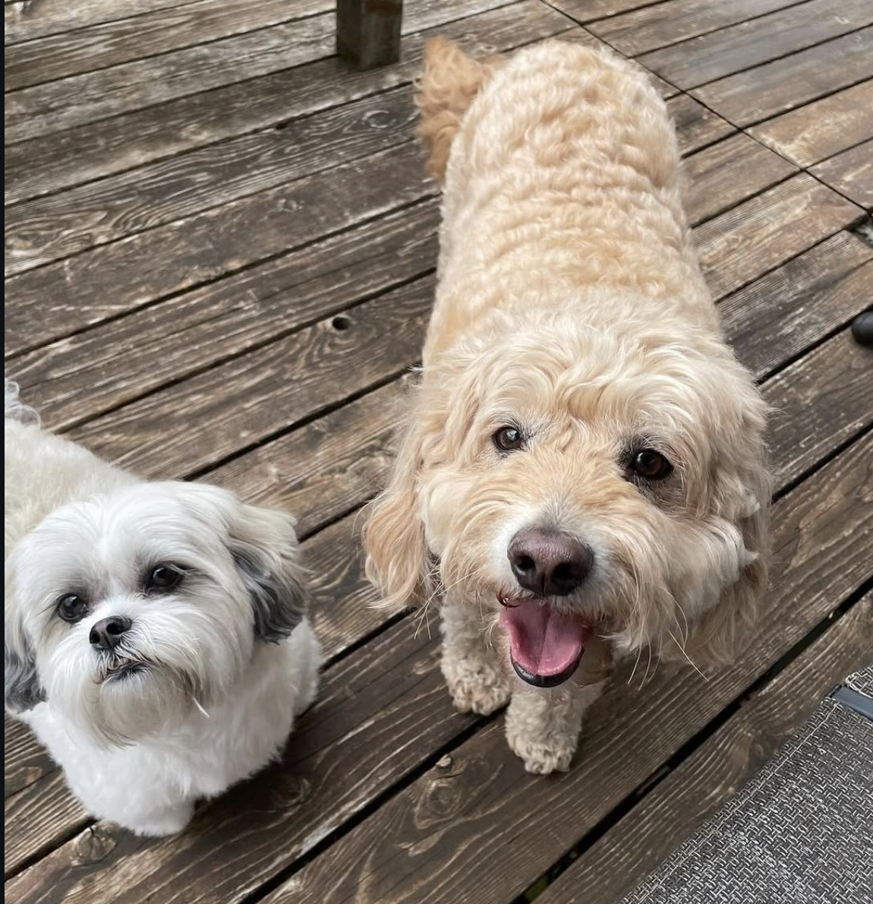

hello, i’m louise! (づ｡◕‿‿◕｡)づ
I’m a student at the University of Wisconsin–Madison majoring in Statistics and Economics (Mathematical Emphasis), with a minor in Mathematics and Data Science
about me!
This site is where I can delve into a deeper, personal look beyond LinkedIn! I can talk about my work, leadership, projects, and other things I care about in my own voice
Professionally, I am especially interested in data analysis, financial analysis, and the intersection between those two. My goal is to make systems and solutions more thoughtful and intentional. I have a flexible disposition -- I love working alone and with people, at home or at office, or taking a more hands-on vs hands-off approach. If interested in more, please feel free to reach out to me at louisen1756@gmail.com or visit my LinkedIn!
Personally, I love spending my free time discovering new music! I pride myself on having a super diverse taste and am currently working on adding my Spotify statistics here! I am also a big fan of karaoke, reading romance books, spending time with my friends, and also admiring dogs and cats! At only 19 -- I'm definitely already a crazy cat (and dog) lady and I will gladly talk about my own dog for years!
my history!
Both my mother and father are from Vietnam and immigrated over to the United States in the 1990s. They had my brother, Louis (yes, his name is Louis), in 2001 and then were happily gifted with me in 2006!I've always been a huge fan of technology -- as every January and September, my entire family would heavily study the new Apple drops every single time they'd come out. I grew up playing video games with my brother and got my first phone when I was in second grade... and then my first computer when I was in fourth. I'm super familiar with these types of interfaces yet I'm always looking to expand my knowledge!
I grew up in Lakeville, Minnesota -- a medium sized town, 30 minutes south of the Twin Cities -- which is a very, very caucasian-majority city. Here, my passion for cultural connection and community surged. I founded the Asian American Connections Club, which in turn, has allowed me to become more passionate about community here during my time in college. Honestly, my highschool days are kind of packed! If curious, please check out my highschool tab to see my experiences and achievements during this time (✿◠‿◠)
College was definitely a new experience because it introduced me to a new-found freedom! I entered university with a determination to do Computer Science. This was honestly just because my brother is a computer science genius. However, I then switched over to Data Science -- thinking I could still be relatively stable within this major. However, I have completely settled on Statistics because I think its balance between coding, mathematics, and analytical reasoning is a much better fit for me. (if you're wondering about econ -- it was always in the plan!)
My favorite spots on campus to study are definitely my home sweet home, memorial union, and the SAC!
meet my dog ⋆˚🐾˖°
Born in September 2016, adopted in November of 2016, this is Beti (or Ti for short). She is a beautiful, Shih Tzu-Maltese mix and is extremely food-based. She’s a huge part of my life, so it only felt right to give her a small spot on this website too.
if curious, check out the instagram I have for her too! ti's instagram!

social media!
LinkedIn: LinkedInInstagram: Instagram